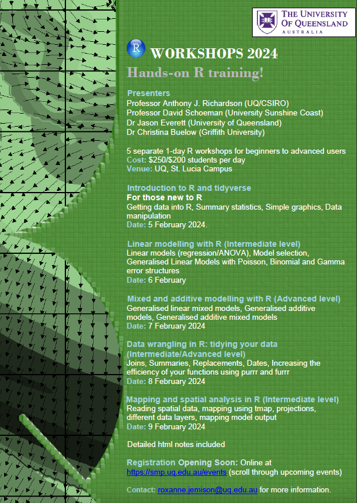

Geospatial Community October Newsletter
Virtual drop-in help session – October 5th, 2-4pm AEST
Let us know ahead of time if you have any questions you’d like us to focus on in help-session by filling out this form.
Next workshop, Large raster manipulation with Dr Caitie Kuempel – October 31th, 2-4pm AEST
Dr Caitie Kuempel from Griffith University will lead a workshop on large spatial data manipulation in R with {gdalUtils}. Read more from Caitie about the workshop below:
Do you work with large spatial data sets? Have you spent hours waiting for data to reproject using packages like raster and terra? There may be a faster solution using the gdalUtils package. This package provides R wrappers for the Geospatial Data Abstraction (GDAL) Utilities, which is a translator library for raster and vector geospatial data formats. It uses command line syntax, making it a bit of a black box compared to other R packages, but can save you heaps of processing time. I don’t claim to be an expert – but I’ll introduce a function that I have found to be particularly useful: gdalwarp. I’ll walk through the syntax and how to use the gdalwarp function for reprojecting and transforming large data more efficiently. We will also have a group discussion on potentially useful packages and workflows for large spatial data manipulation.
Previous workshop
Zhao Xiang from Queensland University of Technology gave a stimulating presentation on building spatial models and dealing with spatial autocorrelation. Thank-you Zhao! The recording will be made available on our youtube channel.
New blog post on inset mapping with {tmap} by Dr Jackson Stockbridge
Dr Jackson Stockbridge led an overview of inset mapping with {tmap} at our September drop-in help session, check-out the blog here
Training
The annual Research Bazaar is coming up November 21-23 - find out more here
R courses at the University of Queensland in February 2024, with a whole day on mapping and spatial analysis, register here
